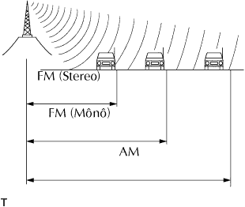

HỆ THỐNG NGHE NHÌN > NHẬN BIẾT NGUỒN GÂY NHIỄU |
| BĂNG TẦN SÓNG RAĐIÔ |
Băng tần Rađiô
Các sóng Rađiô dùng các băng tần rađiô như được chỉ ra trong bảng dưới đây.
| VÙNG DỊCH VỤ |
|  |
Các vùng phủ sóngï của các sóng AM và FM là rất khác nhau. Thỉnh thoảng đài phát AM có thể thu sóng rất rõ nhưng sóng FM Stereo thì không thể.
FM âm thanh nổi có khu vực dịch vụ nhỏ nhất và thiên về thu kiểu sóng tĩnh và các kiểu nhiễu khác như tiếng ồn).
| CÁC VẤN ĐỀ VỀ THU SÓNG |
Các sóng AM dễ bị ảnh hưởng đến nhiễu điện được gọi là "phasing". Chỉ xảy ra vào ban đêm, Phasing là sự nhiễu được tạo ra khi xe nhận được 2 tín hiệu sóng âm thanh từ một đài phát. Một tín hiệu bị phản xạ từ tầng điện li và một tín hiệu khác nhận trực tiếp từ đài phát.
Multipath (đa đường truyền) là một loại nhiễu được tạo ra khi xe nhân được 2 tín hiệu sóng Rađiô từ một đài phát. Một tín hiệu là do phản xạ từ toà nhà cao tầng hoặc núi và tín hiệu còn lại là nhận được trực tiếp từ đài phát.
Fade out (Âm thanh giảm dần) được gây ra do các vật thể (toà nhà cao tầng, núi và các vật cao khác) nó làm lệch hướng truyền tín hiệu, dẫn đến tín hiệu yếu hơn khi có vật thể nằm giữa đài phát và xe. Sóng rađiô tần số cao, như sóng FM là rất dễ ảnh hưởng bởi các vật chướng ngại. Sóng rađiô tần số thấp, như sóng AM là ít ảnh hưởng hơn.
| VẤN ĐỀ VỀ NHIỄU |
Kỹ thuật viên phải hiểu rõ về vấn đề tiếng ồn nhiễu của xe khách hàng. Hãy dùng bảng dưới đây để chẩn đoán trục trặc do nhiễu.
| Sóng Rađiô | Điều kiện mà nhiễu xuất hiện. | Nguyên nhân có thể |
| AM | Nhiễu xuất hiện trong một vùng nhất định | Nhiễu mạnh từ bên ngoài |
| AM | Nhiễu xuất hiện khi đài phát yếu |
|
| AM | Nhiễu chỉ xuất hiện vào ban đêm | Tiếng đập mạnh từ đài phát ở xa |
| FM | Nhiễu xuất hiện tại một địa điểm nhất định khi lái xe. | Tiếng nhiễu lỗn sóng khác hoặc nhiễu gây nếu bởi sự thay đổi tần số FM. |